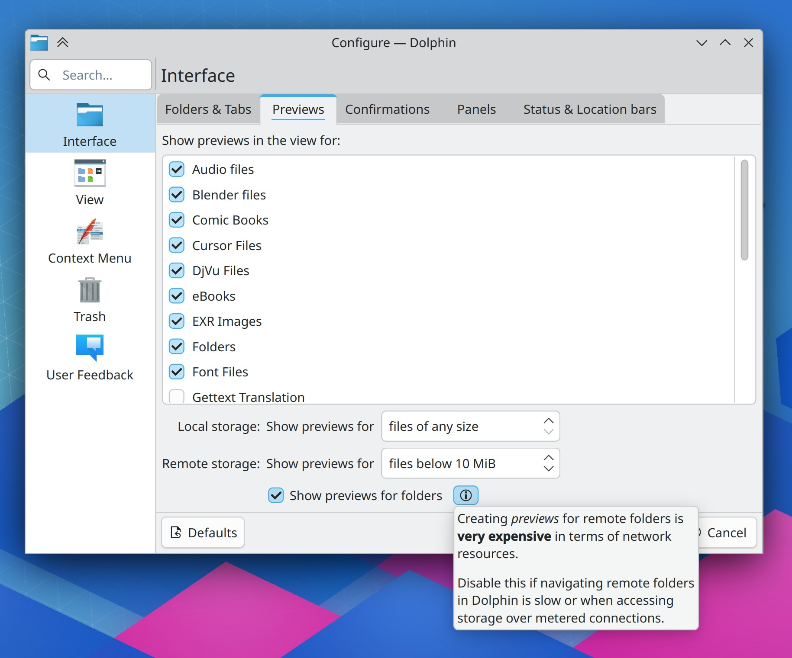

Вышел Rocky Linux 9.4

Потихоньку-полегоньку, несколько дней назад вышел релиз 9.4 проекта Rocky Linux — дистрибутива, организованного Грегори Курцером в ответ на прекращение классических релизов CentOS и переход к CentOS Stream. Грегори Курцер, будучи разработчиком CentOS, решил начать всё заново, и запустил проект Rocky Linux, который должен был делать всё то же самое, что раньше делал CentOS, но теперь уже отдельно от Red Hat.
ИсточникИзменения для улучшения отображения KDE-приложений в GNOME и Xfce
Нейт Грэм (Nate Graham), разработчик, занимающийся контролем качества в проекте KDE, опубликовал очередной отчёт о разработке KDE. Наиболее заметным изменением стала инициатива по решению проблем с пиктограммами, при запуске приложений, входящих в состав KDE Gear, в окружениях, отличных от KDE, таких как GNOME и Xfce.
ИсточникLibreELEC 12 на базе медиацентра Kodi
LibreELEC 12 использует медиацентр Kodi 21 «Omega». В Kodi 21 выполнен переход на FFmpeg 6, улучшена производительность и стабильность работы программы, обновлен интерфейс многих диалогов и выполнены другие улучшения.
ИсточникЕГЭ на Linux: в России протестируют сдачу экзамена на отечественной ОС
В ПАО «Группа "Астра"» также подтвердили участие в адаптации программного обеспечения для ЕГЭ к российским операционным системам. Как утверждают в компании, в проект привлечены и другие разработчики, поскольку решение будет мультиплатформенным. В «Ред Софта» (разработчик «Ред ОС») считают критически важным провести тестирование Рособрнадзора на популярных российских операционных системах, так как многие учебные заведения уже переведены на них. В НТЦ ИТ РОСА лишь заявили, что работают над операционной системой на базе Linux под названием РОСА, которая применяется в образовательных организациях.
Источник